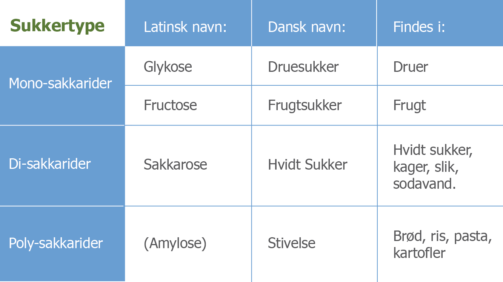

Der er 3 forskellige typer af kulhydrat, og nogle er mere sunde end andre:
Kulhydrat er kroppens vigtigste kilde til energi. 1 gram kulhydrat indeholder 17 kJ.
Kulhydrater optages i maven og tyndtarmen og transporteres herfra som blodsukker rundt i blodet. Musklerne er det organ, der har den største betydning for reguleringen af blodsukkeret, idet musklerne primært bruger kulhydrat som energikilde. Der kan også oplagres lidt kulhydrat i musklerne som depot.
Stivelse er den mest almindelige slags kulhydrat. Det findes bl.a. i brød og gryn, kartofler, ris og pasta.
Kostfibre er ufordøjelige, men de er vigtige, fordi de får maden til at fylde mere, så man føler sig mæt.
Frugt og grønt indeholder naturligt forekommende sukker. Sukker herfra kan stort set indgå i ubegrænset mængde i en sund kost. I andre fødevarer som bl.a. sodavand, slik og kager, er sukkeret tilsat som en ingrediens. Det er en god idé at spare på fødevarer med tilsat sukker.
Næringsindhold i alle madvarer:
foodcomp.dkEnergi i mad:
altomkost.dk